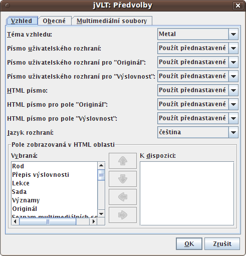
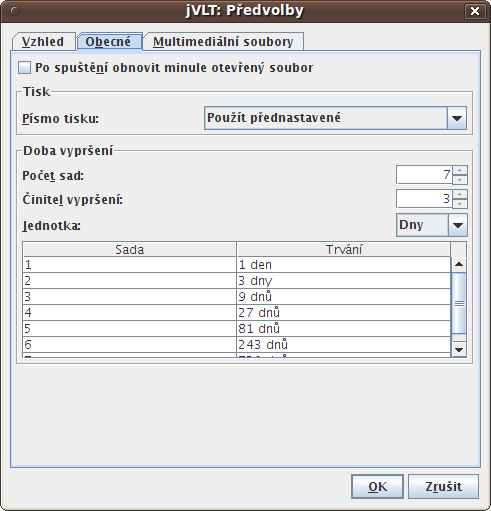
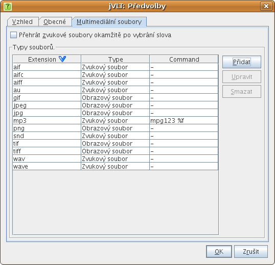
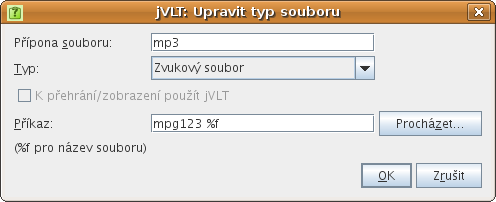

|
Nastavení
|
Zvolením položky „Předvolby...“ z nabídky „Edit“
se otevře dialog, ve kterém můžete měnit několik nastavení jVLT.
Na záložce „Vzhled“ lze nastavit následující:
-
Téma vzhledu:
Téma vzhledu rozhoduje o celkovém vzhledu aplikace. Počet témat vzhledu
k dispozici závisí na operačním systému. Vezměte na vědomí, že
přizpůsobit písma aplikace je možné pouze v případě, že je použito téma
vzhledu „Metal“.
-
Písmo tlačítek, nabídek, nápisů a seznamů
-
Písmo tabulek a textových polí
-
Písmo pole „Originál“:
Toto nastavení je obzvláště užitečné pro jazyky se složitými znaky,
například pro čínštinu nebo japonštinu. Určuje písmo pole
„Originál“ v
detailním náhledu.
-
Písmo pole „Výslovnost“:
Můžete také vybrat písmo pro zobrazování výslovnosti v detailním
náhledu.
-
Jazyk rozhraní:
Toto nastavení určuje jazyk textových řetězců aplikace.
-
Pole zobrazovaná v HTML oblasti:
Zde můžete vybrat, která pole se budou zobrazovat
detailním náhledu
na záložce slovíček.
Vezměte na vědomí, že změna kteréhokoli z výše uvedených nastavení
si vyžádá restart aplikace.

Na záložce „Obecné“ můžete v současné době provádět
následující nastavení:
-
Po spuštění obnovit minule otevřený soubor:
Pokud toto políčko zaškrtnete, jVLT si bude pamatovat, se kterým souborem jste
pracovali během vašeho posledního sezení, a po novém spuštění ho nahraje.
-
Písmo tisku:
Po stisknutí tlačítka písma můžete změnit písmo používané pro
tisk.
-
Zadávat odpověď:
Prostřednictvím tohoto políčka rozhodujete, zda chcete během kvízu zadávat
řešení.
-
Ignorovat velikost písmen v zadané odpovědi:
Určuje, zda se vložená odpověď bude kontrolovat včetně velkých a malých písmen.
Je-li políčko zaškrtnuto, bude odpověď „španělsko“, když jde
o „Španělsko“, považována za správnou.
-
Přednastavit odpověď:
Je-li toto políčko zaškrtnuto, můžete pro každé slovo v kvízu přednastavit
odpověď (buď „Ano“, anebo „Ne“).

Doba vypršení
Doba vypršení rozhoduje o tom, kdy se slovo po kvízu znovu aktivuje (viz
oddíl o kvízech). Nastavení, jimiž se doba
vypršení upravuje, jsou tři:
-
Počet sad:
Maximální počet sad přiřazených ke slovu. Pokud budete během kvízu vědět
slovo, které už má maximální číslo sady, toto číslo se nezmění (normálně se
o jedno zvýší).
-
Činitel vypršení:
Určuje dobu, po jejímž uplynutí se slovo znovu aktivuje. Je-li činitel
vypršení X, slovo přiřazené do sady č. i se aktivuje po
Xi-1 časových jednotkách.
Tzn. slovo v sadě č. 1 se aktivuje po jedné časové jednotce,
slovo v sadě č. 2 po X časových jednotkách, slovo v sadě
č. 3 po X2 časových
jednotkách atd.
-
Jednotka:
Časovou jednotkou mohou být buď dny, anebo hodiny.
Na této záložce můžete přizpůsobovat to, jak jVLT zachází s multimediálními
soubory zadanými v dialogu slov.

-
Přehrát zvukové soubory okamžitě po vybrání slova:
Po zaškrtnutí tohoto políčka bude jVLT automaticky přehrávat zvukové soubory
ve chvíli, kdy v seznamu slov
vyberete některé slovo.
Typy souborů
V oblasti „Typy souborů“ lze definovat externí příkazy pro
přehrávání nebo zobrazování multimediálních souborů. Po stisknutí tlačítka
„Upravit“ nebo „Přidat“ se otevře nový dialog, který
vám umožní upravovat určitý typ souborů. Význam součástí dialogu je popsán
níže:
-
Přípona souborů:
Přípona souborů, např. "mp3". U předvolených souborů nelze tuto hodnotu
změnit.
-
Typ:
Typ souborů. Toto nastavení je nezávazné, rozhoduje pouze o tom,
jaká ikona se použije v
detailním náhledu slova.
-
K přehrání/zobrazení použít jVLT:
Toto zaškrtávací políčko můžete použít pouze pro předvolené typy souborů.
Je-li zaškrtnuto, jVLT se pokusí místo spuštění externího příkazu přehrát
soubor sám.
-
Příkaz:
Příkaz, který se má použít pro přehrání nebo zobrazení souboru
s aktuální příponou. Na jeho konci musíte uvést %f jako zástupce
pro jméno souboru.

|